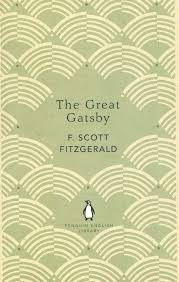
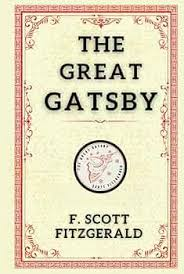
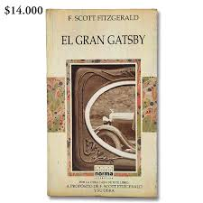

Descubre el placer de leer juntos
Nuestro club de lectura te invita a explorar nuevos mundos,
compartir ideas y conectar con otros amantes de los libros. Cada mes, seleccionamos
un libro fascinante para discutir y disfrutar
Nuestro club de lectura te invita a explorar nuevos mundos,
compartir ideas y conectar con otros amantes de los libros. Cada mes, seleccionamos
un libro fascinante para discutir y disfrutar
Una joven descubre un jardín abandonado que guarda secretos y magia, transformando su vida y la de quienes la rodean.


